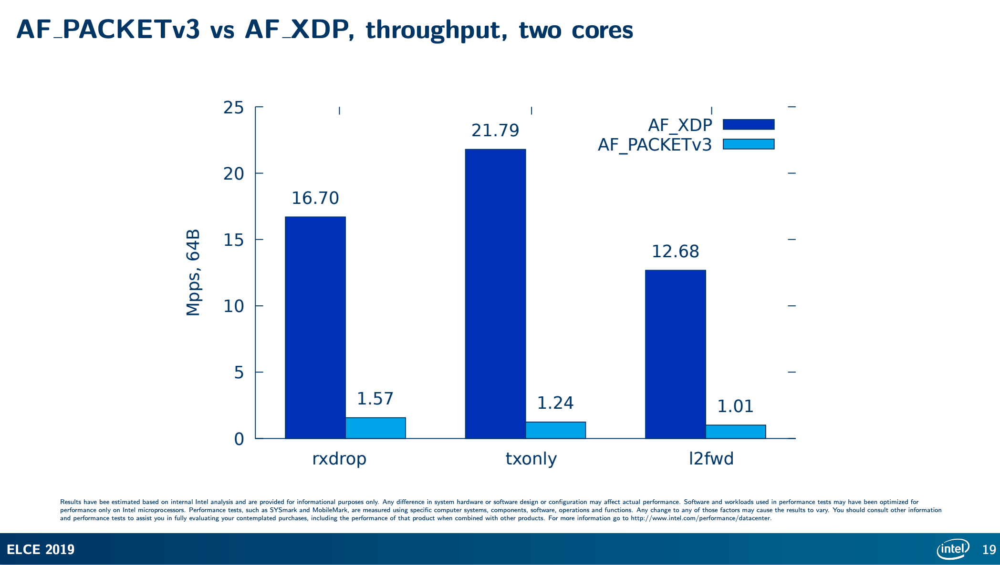
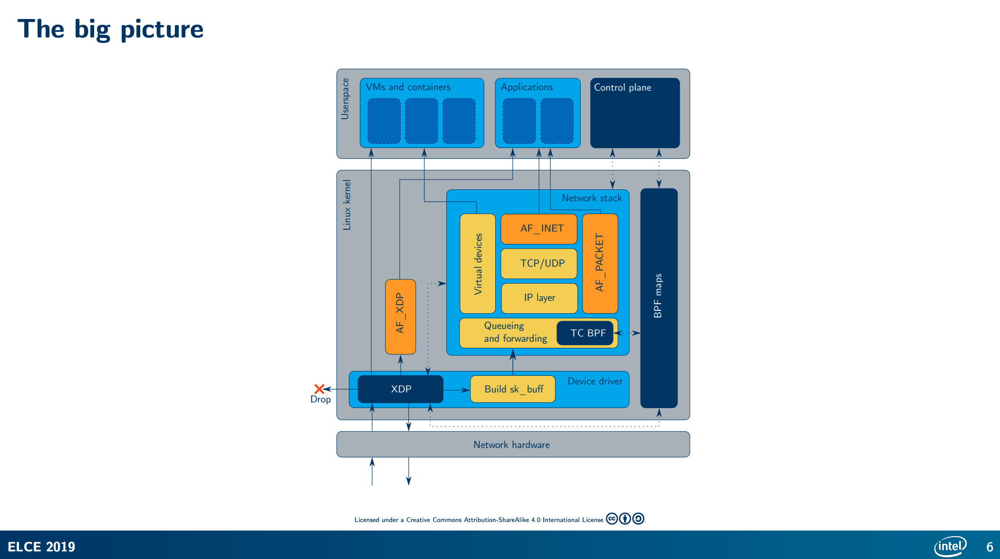
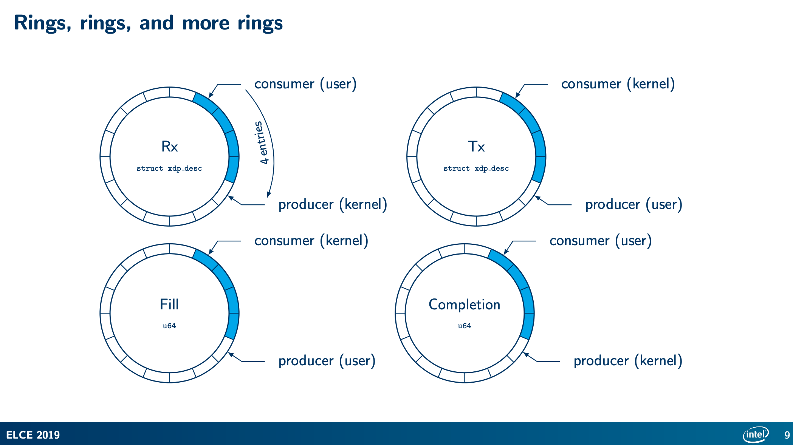
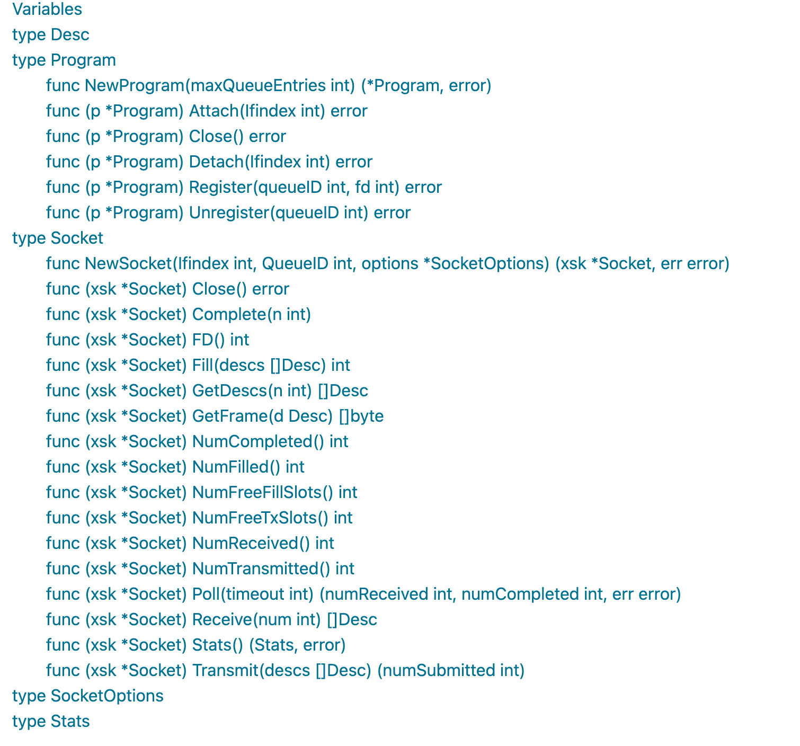

Linux 网络栈并不缺乏功能，它的表现也很好 足以满足大多数用途。但是，在高速网络下，传统网络编程的额外开销占比太大了。在前一篇关于syscall.Socket的文章中，我们介绍了AF_PACKET类型的socket，它的性能着实一般，所有的数据都得在用户态和内核态之间做转换，而且在高并发的情况下还有大量的中断。使用eBPF XDP可以完美解决高性能的问题，我们在更早的文章中介绍了XDP的技术，Björn Töpel在Linux 4.18版本中为Socket增加了一个协议族 AF_XDP,可以利用Socket接口和XDP技术实现高性能的网络读写。
2019年 Intel的Björn Töpel, 也是他主要实现的AF_XDP Socket,在一次分享中介绍了AF_XDP和普通的AF_PACKET的三个场景下的性能对比:

没有对比就没有伤害，可以看到AF_XDP的性能远远大于AF_PACKET。
AF_XDP Socket介绍
AF_XDP（eXpress Data Path）是一种高性能网络协议栈，可用于实现零拷贝数据传输和零中断数据接收。AF_XDP socket是一种Linux内核中支持AF_XDP协议的socket类型。
相较于传统的socket，AF_XDP socket具有以下几个显著的特点：
- 零拷贝传输：在使用AF_XDP socket传输数据时，数据可以直接在内存中进行传输，而无需将数据从用户空间复制到内核空间，从而减少了数据传输过程中的内存复制次数，提高了数据传输效率。
- 零中断接收：在使用AF_XDP socket接收数据时，数据可以直接从网卡中接收，而无需通过中断通知内核，从而减少了中断处理的次数，提高了接收数据的效率。
- 支持多队列：AF_XDP socket支持多个队列，可以将不同的网络流量路由到不同的队列中，从而实现更好的负载均衡和多核利用。
- 支持用户空间协议栈：AF_XDP socket可以与用户空间中的协议栈结合使用，从而可以在用户空间中实现网络协议栈，提高了网络应用程序的性能和灵活性。
总之，AF_XDP socket是一种高性能的网络数据传输方式，适用于需要处理大量数据的高性能网络应用程序。

我们使用普通的 socket() 系统调用创建一个AF_XDP套接字（XSK）。每个XSK都有两个ring：RX RING 和 TX RING。套接字可以在 RX RING 上接收数据包，并且可以在 TX RING 环上发送数据包。这些环分别通过 setockopts() 的 XDP_RX_RING 和 XDP_TX_RING 进行注册和调整大小。每个 socket 必须至少有一个这样的环。RX或TX描述符环指向存储区域（称为UMEM）中的数据缓冲区。RX和TX可以共享同一UMEM，因此不必在RX和TX之间复制数据包。
UMEM也有两个 ring：FILL RING 和 COMPLETION RING。应用程序使用 FILL RING 向内核发送可以承载报文的 addr (该 addr 指向UMEM中某个chunk)，以供内核填充RX数据包数据。每当收到数据包，对这些 chunks 的引用就会出现在RX环中。另一方面，COMPLETION RING包含内核已完全传输的 chunks 地址，可以由用户空间再次用于 TX 或 RX。
可以看到，这里有四个环，RX RING 和 TX RING环中的数据是描述符(xdp_desc)，而FILL RING 和 COMPLETION RING是地址(u64)。

- Rx Ring：接收环（Receive Ring）是由硬件网卡或AF_XDP驱动程序生成的，它存储待处理的接收数据帧描述符（Receive Descriptor），并将这些描述符传递给内核或用户空间程序。接收环通常由多个队列组成，每个队列都有一个独立的Rx Ring。Rx Ring的生产者是XDP程序，消费者是用户态程序；XDP程序消耗 Fill Ring，获取可以承载报文的desc并将报文拷贝到desc中指定的地址，然后将desc填充到 Rx Ring 中，并通过socket IO机制通知用户态程序从 Rx Ring 中接收报文
- Fill Ring：填充环（Fill Ring）是用户空间程序为接收环生成新描述符的环，以便接收环始终有足够的描述符可供使用。填充环也可以由多个队列组成，每个队列都有一个独立的Fill Ring。Fill Ring 的生产者是用户态程序，消费者是内核态中的XDP程序；用户态程序通过Fill Ring 将可以用来承载报文的 UMEM frames 传到内核，然后内核消耗Fill Ring 中的描述符desc，并将报文拷贝到desc中指定地址（该地址即UMEM frame的地址）
- Tx Ring：发送环（Transmit Ring）由用户空间程序生成，用于存储要发送的数据帧描述符（Transmit Descriptor）。发送环也可以由多个队列组成，每个队列都有一个独立的Tx Ring。Tx Ring的生产者是用户态程序，消费者是XDP程序；用户态程序将要发送的报文拷贝 Tx Ring 中 desc指定的地址中，然后 XDP程序 消耗 Tx Ring 中的desc，将报文发送出去，并通过 Completion Ring 将成功发送的报文的desc告诉用户态程序；
- Completion Ring：完成环（Completion Ring）是用于接收已经处理完的数据帧描述符的环。完成环由内核或用户空间程序创建，可以由多个队列组成，每个队列都有一个独立的Completion Ring。Completion Ring的生产者是XDP程序，消费者是用户态程序
当内核完成XDP报文的发送，会通过 completion_ring 来通知用户态程序，哪些报文已经成功发送，然后用户态程序消耗 completion_ring 中 desc(只是更新consumer计数相当于确认)；
通过这四个ring的协同工作，AF_XDP可以实现高性能的网络数据传输，以及在用户空间实现网络协议栈的功能。用户空间程序可以通过Fill Ring为Rx Ring生成新的接收数据描述符，然后使用Tx Ring将处理过的数据发送出去。内核或用户空间程序可以从Completion Ring中获取已经处理完的描述符，以便进行后续的处理。这些ring可以实现高效的数据处理和网络负载均衡，从而提高了网络应用程序的性能和吞吐量。
AF_XDP Socket在高性能网络应用中的应用场景，包括DDoS攻击防御、网络流量监控、负载均衡等。在这些应用场景中，AF_XDP可以通过实时处理大量网络流量数据，快速识别恶意流量和负载均衡，提高网络应用的性能和安全性。
Go AF_XDP 实战
AF_XDP Socket相对于传统的AF_PACKET的使用的复杂程序至少要高一个数量级，因为复杂，所以容易出错，不过幸运的是，有一个第三方的库对它进行了封装，更方便我们使用，这个库就是asavie/xdp。
它将XSK进行了封装，提供了非常方便的方法进行数据的读取和发送。

我们用它的两个例子介绍它的功能。
发送的例子
下面是一个不断发送DNS查询的示例:
|
|
- 首先它基于网卡生成一个XSK,这个XSK的初始化隐藏了底层的很多的初始化动作，这是这个库做的很好的地方
- 生成一个特定的DNS查询请求包,后面会一直使用这个数据往网络上发送
- 得到所有可用的Desc, 并使用DNS请求数据进行初始化
- 启动一个goroutine, 每秒打印出发送的包数和数据大小，以便观察它的性能
- 在一个死循环中，先得到可以发送的Desc,然后调用
Transmit将Desc写入到Tx ring。 - 然后调用
Poll,等待内核发送了数据或者接收到数据，再进行下一次的数据发送
得益于XDP库的封装，很多麻烦的细节比如mmap的创建、socket option的设置， ring的操作等等，都隐藏起来了，对外提供了易于使用的接口
接下来我们看一个同时读写的例子。
广播的例子
下面这个例子接收所有的数据包，并把目的Mac地址改成广播地址，再发送出去：
|
|
如代码中的注释所示，
- 先Fill
- 调用Poll等待有接收的数据
- 调用Receive读取接收的数据
- 修改数据中的mac地址
- 再发送出去
如果你也测试这个程序，最好创建一个测试用的网络，否则会把你的网络搞挂
参考文档
- https://lwn.net/Articles/750845/
- https://www.kernel.org/doc/html/latest/networking/af_xdp.html
- https://github.com/asavie/xdp
- https://blog.xuegaogg.com/posts/1933/
- https://rexrock.github.io/post/af_xdp1/
- https://elinux.org/images/9/96/Elce-af_xdp-topel-v3.pdf
Go高级网络编程系列